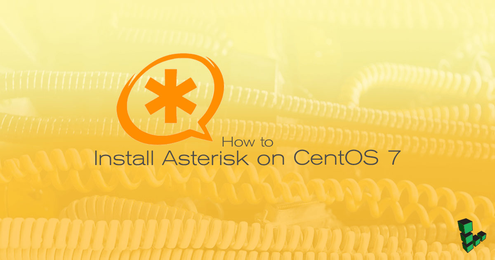

How to Install Asterisk on CentOS 7
Updated by Linode Contributed by Nick Rahl
Dedicated CPU instances are available!Linode's Dedicated CPU instances are ideal for CPU-intensive workloads like those discussed in this guide. To learn more about Dedicated CPU, read our blog post. To upgrade an existing Linode to a Dedicated CPU instance, review the Resizing a Linode guide.

What is Asterisk?
Asterisk is an open source private branch exchange (PBX) server that uses Session Initiation Protocol (SIP) to route and manage telephone calls. Notable features include customer service queues, music on hold, conference calling, and call recording, among others.
This guide covers the steps necessary to provision a new CentOS 7 Linode as a dedicated Asterisk server for your home or office.
NoteThis guide is written for a non-root user. Commands that require elevated privileges are prefixed withsudo. If you’re not familiar with thesudocommand, you can check our Users and Groups guide.
Before You Begin
Create a CentOS 7 Linode in your closest data center (barring Atlanta (us-southeast), which does not currently support SIP servers). A 2GB Linode is enough to handle 10-20 concurrent calls using a non-compressed codec, depending on the processing required on each channel.
Ensure you have followed the Getting Started and Securing Your Server guides to prepare your Linode. Do not complete the steps to set up a firewall.
Update your system:
sudo yum updateDisable SELinux and reboot your Linode. If you have Lassie enabled, your Linode will be back up and running in a few minutes.
sed -i 's/SELINUX=enforcing/SELINUX=disabled/g' /etc/selinux/config sudo systemctl reboot
Configure firewalld
CentOS 7 enables firewalld’s
publiczone for the default interface (eth0). SSH and DHCPv6 services are also enabled by default. To verify your current firewalld zone:sudo firewall-cmd --get-active-zones sudo firewall-cmd --permanent --list-servicesThat should return:
[user@asterisk ~]$ sudo firewall-cmd --get-active-zones public interfaces: eth0And:
[user@asterisk ~]$ sudo firewall-cmd --permanent --list-services ssh dhcpv6-clientAdd the SIP services.
Note
All the following firewalld rules contain the--permanentflag to ensure the rules persist after a system reboot.sudo firewall-cmd --zone=public --permanent --add-service={sip,sips}Depending on your needs, you may want to add other related ports:
MGCP - If you use media gateway control protocol in your configuration.
sudo firewall-cmd --zone=public --permanent --add-port=2727/udpRTP - The media stream - you can change this in
/etc/asterisk/rtp.conf.sudo firewall-cmd --zone=public --permanent --add-port=10000-20000/udpIf you plan to use FreePBX to manage Asterisk, add the following rule:
sudo firewall-cmd --zone=public --permanent --add-service={http,https}IAX - If you need IAX, add the following rule. IAX is “Inter-Asterisk Exchange” and was meant to allow multiple Asterisk servers to communicate with one another. Some VOIP trunking providers use this, but most use SIP. Unless your VOIP provider requires it or you are running multiple Asterisk servers, you probably won’t need IAX or IAX2.
sudo firewall-cmd --zone=public --permanent --add-port=4569/udp
Verify your new configuration with:
sudo firewall-cmd --permanent --list-services sudo firewall-cmd --permanent --list-portsYou should see the services and ports you just added in addition to default SSH and DCHPv6 services:
[user@asterisk ~]$ sudo firewall-cmd --list-ports 2727/udp 10000-20000/udp 4569/udp[user@asterisk ~]$ sudo firewall-cmd --permanent --list-services ssh dhcpv6-client sip sips http https
Install PJPROJECT
PJPROJECT is Asterisk’s SIP channel driver. It should improve call clarity and performance over older drivers.
Install build dependencies:
sudo yum install epel-release gcc-c++ ncurses-devel libxml2-devel wget openssl-devel newt-devel kernel-devel-`uname -r` sqlite-devel libuuid-devel gtk2-devel jansson-devel binutils-devel bzip2 patch libedit libedit-develAs a non-root user, create a working directory for the build:
mkdir ~/build-asteriskChange to that directory:
cd ~/build-asteriskUse
wgetto download the PJSIP driver source code:wget https://www.pjsip.org/release/2.8/pjproject-2.8.tar.bz2Extract it:
tar -jxvf pjproject-2.8.tar.bz2Change to the newly created directory:
cd pjproject-2.8Specify the compiling flags and options:
./configure CFLAGS="-DNDEBUG -DPJ_HAS_IPV6=1" --prefix=/usr --libdir=/usr/lib64 --enable-shared --disable-video --disable-sound --disable-opencore-amrEnsure that all dependencies are in place:
make depIf
make depcompletes successfully, then build the plugin. It should only take a few minutes.makeInstall the packages:
sudo make install sudo ldconfigEnsure the libraries have been properly installed:
sudo ldconfig -p | grep pjYou should see:
libpjsua2.so.2 (libc6,x86-64) => /lib64/libpjsua2.so.2 libpjsua2.so (libc6,x86-64) => /lib64/libpjsua2.so libpjsua.so.2 (libc6,x86-64) => /lib64/libpjsua.so.2 libpjsua.so (libc6,x86-64) => /lib64/libpjsua.so libpjsip.so.2 (libc6,x86-64) => /lib64/libpjsip.so.2 libpjsip.so (libc6,x86-64) => /lib64/libpjsip.so libpjsip-ua.so.2 (libc6,x86-64) => /lib64/libpjsip-ua.so.2 libpjsip-ua.so (libc6,x86-64) => /lib64/libpjsip-ua.so libpjsip-simple.so.2 (libc6,x86-64) => /lib64/libpjsip-simple.so.2 libpjsip-simple.so (libc6,x86-64) => /lib64/libpjsip-simple.so libpjnath.so.2 (libc6,x86-64) => /lib64/libpjnath.so.2 libpjnath.so (libc6,x86-64) => /lib64/libpjnath.so libpjmedia.so.2 (libc6,x86-64) => /lib64/libpjmedia.so.2 libpjmedia.so (libc6,x86-64) => /lib64/libpjmedia.so libpjmedia-videodev.so.2 (libc6,x86-64) => /lib64/libpjmedia-videodev.so.2 libpjmedia-videodev.so (libc6,x86-64) => /lib64/libpjmedia-videodev.so libpjmedia-codec.so.2 (libc6,x86-64) => /lib64/libpjmedia-codec.so.2 libpjmedia-codec.so (libc6,x86-64) => /lib64/libpjmedia-codec.so libpjmedia-audiodev.so.2 (libc6,x86-64) => /lib64/libpjmedia-audiodev.so.2 libpjmedia-audiodev.so (libc6,x86-64) => /lib64/libpjmedia-audiodev.so libpjlib-util.so.2 (libc6,x86-64) => /lib64/libpjlib-util.so.2 libpjlib-util.so (libc6,x86-64) => /lib64/libpjlib-util.so libpj.so.2 (libc6,x86-64) => /lib64/libpj.so.2 libpj.so (libc6,x86-64) => /lib64/libpj.so
Install Asterisk
Return to your build directory:
cd ~/build-asteriskDownload the latest version of Asterisk 16:
wget http://downloads.asterisk.org/pub/telephony/asterisk/asterisk-16-current.tar.gzUntar the file:
tar -zxvf asterisk-16-current.tar.gzSwitch to the new Asterisk directory, replacing
16.1.1if needed:cd asterisk-16.1.1
Enable MP3 Support
To use MP3 files for Music on Hold, install Subversion:
sudo yum install svnRun the configuration script:
contrib/scripts/get_mp3_source.sh
Configure and Build Asterisk
In your build directory for Asterisk, run the
configurescript to prepare the Asterisk source code for compiling:./configure --libdir=/usr/lib64 --with-jansson-bundledStart the build process. After a short while, you should see a menu on screen allowing you to configure the features you want to build.
make menuselectIf you want to use the MP3 format with Music on Hold, you should select
Add-Ons, then use the right arrow to move to the right-hand list. Navigate toformat_mp3and press Enter to select it.Select additional core sound packages and Music on Hold packages in the left menu, and enable
.wavformat for your desired language (ie. use theENpackage for English.).Press F12 to save and exit.
Compile Asterisk. When finished, you should see a message which says Asterisk has successfully been built.
sudo makeInstall Asterisk:
sudo make installInstall sample configuration files:
sudo make samplesConfigure Asterisk to start itself automatically on boot:
sudo make config
Test Connection
You now have a working Asterisk phone server. Fire up Asterisk and make sure it runs.
Start Asterisk:
sudo systemctl start asteriskConnect to Asterisk:
sudo asterisk -rvvYou should see an output similar to the following:
Asterisk 16.0.0, Copyright (C) 1999 - 2018, Digium, Inc. and others. Created by Mark SpencerTo see a list of possible commands:
core show helpTo disconnect type:
exitOnce disconnected, Asterisk continues to run in the background.
Next Steps
Now that you have an Asterisk server running on your Linode, it’s time to connect some phones, add extensions, and configure the various options that are available with Asterisk. For detailed instructions, check out the Asterisk Project’s guide to Configuring Asterisk.
CautionWhen running a phone system on a remote server such as a Linode, it’s always good practice to secure the signaling data with TLS and the audio portion of calls using SRTP to prevent eavesdropping. Once you have a working dial-plan, be sure to follow the Secure Calling Guide to encrypt your communications.
Join our Community
Find answers, ask questions, and help others.
This guide is published under a CC BY-ND 4.0 license.